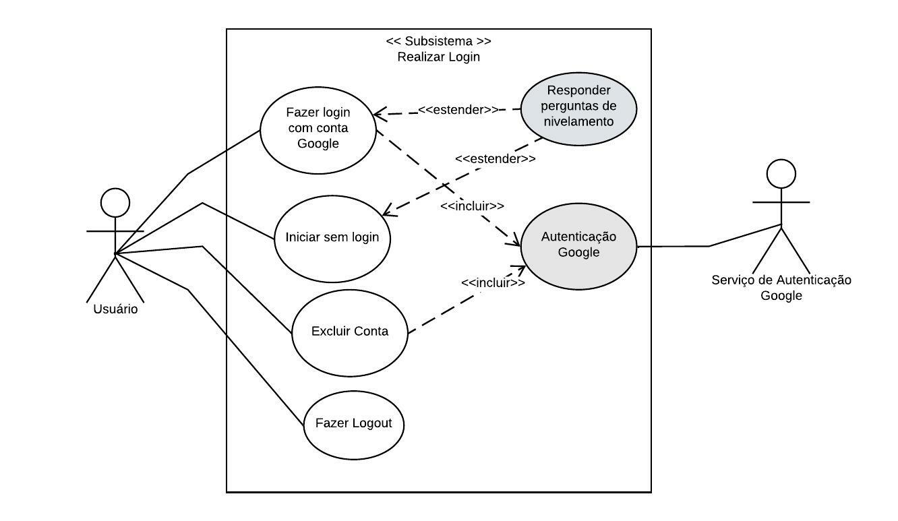
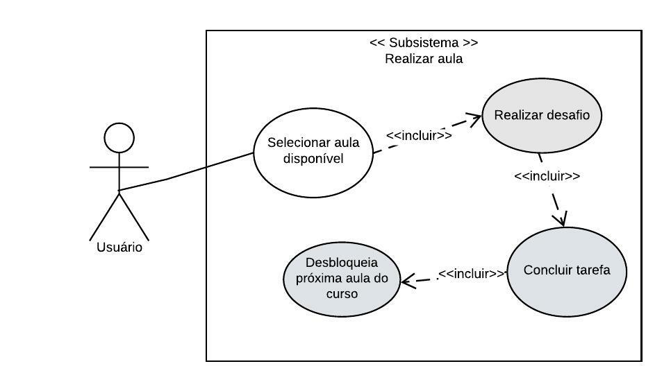
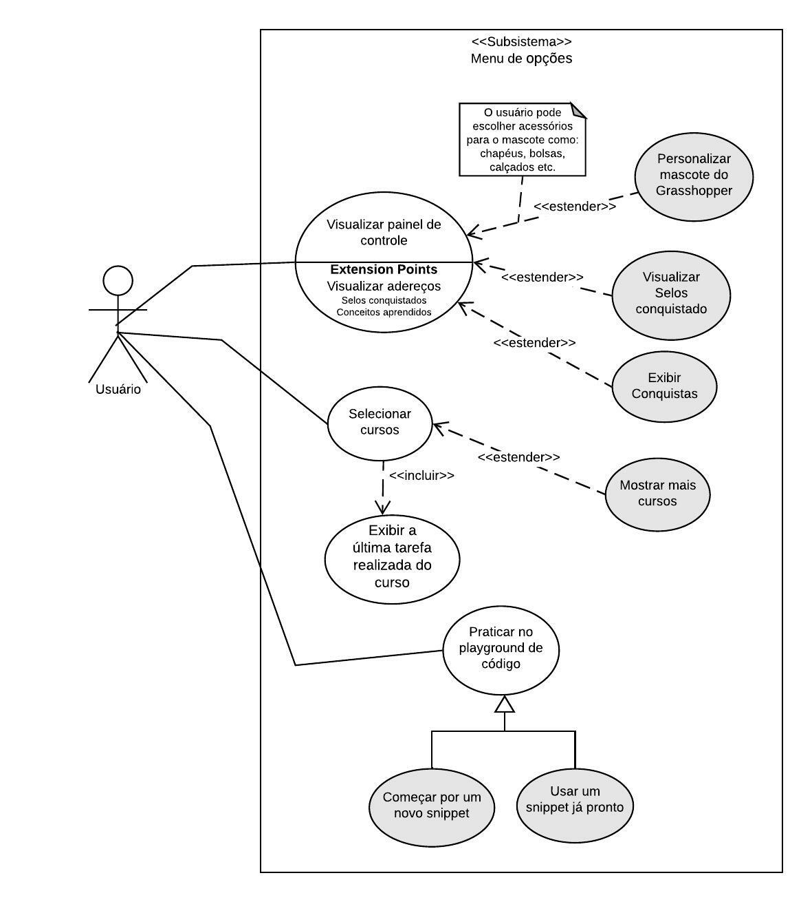
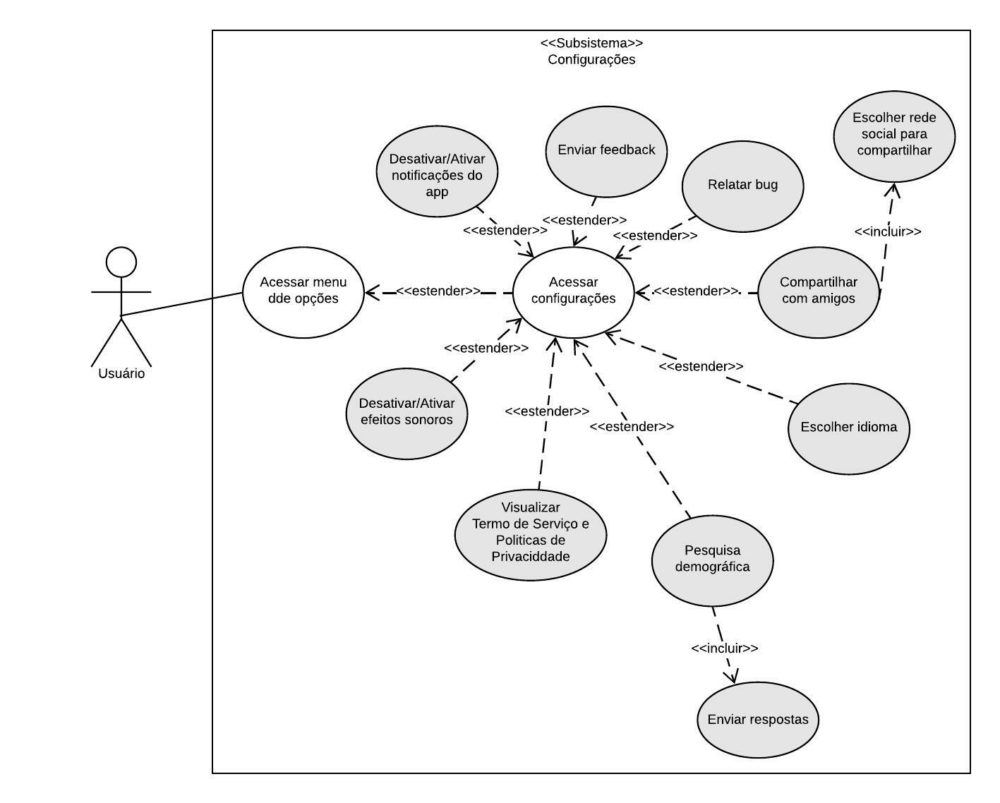
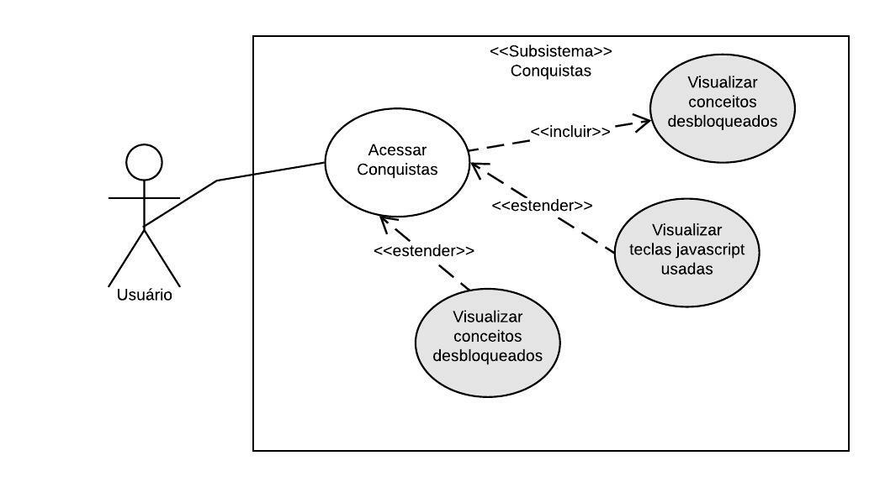

Casos de Uso
Introdução
Um caso de uso é uma descrição das maneiras pelas quais um usuário interage com um sistema ou produto. Um caso de uso pode estabelecer os cenários de sucesso, os cenários de falha e quaisquer variações críticas ou exceções.
Metodologia
Para elaborar dos casos de uso foram verificados e analisados os documentos de elicitação de requisitos. A partir disso, foram feitos os casos de uso utilizando a ferramenta Lucidchart.
Casos de Uso & Especificação
UC01 - Fazer Login
Primeiro Caso de Uso(Figura 1) que representa o subconjunto Realizar login, seguido da tabela de especificação(Tabela 1).

Figura 1 – UC01
Fonte: Philipe de Sousa
| UC01 | Fazer Login | Rastreabilidade |
|---|---|---|
| Descrição | Fazer Login no Grasshopper | |
| Ator(es) | > Usuário > Serviço de autenticação Google |
|
| Pré condições | > Usuário estar deslogado no aplicativo | |
| Fluxo principal | > Usuário acessa o Grasshopper > Usuário clica no botão "Fazer login com o Google" > Usuário escolhe a conta para continuar no Grasshopper > Os dados de login são autenticados |
OBS17 OBS02, ST06 OBS02, ST06 OBS02, ST06 |
| Fluxos alternativos | Fluxo Alternativo 1 - Iniciar sem fazer login: > Usuário acessa o Grasshopper > Usuário clica no botão "Iniciar sem fazer login" > Usuário segue os passos e responde as perguntas de nivelamento > O usuário é logado automaticamente |
OBS17 OBS01 ST11, BS05 |
| Fluxos de exceção | Fluxo de Exceção 1 - Desconectado: > Aplicativo apresentar uma mensagem de erro avisando que não foi possível fazer o Login pois está sem conexão com a internet |
|
| Pós condições | Usuário fica logado no Grasshopper e é direcionado para a aula tutorial |
Tabela 1 – UC01
Fonte: Philipe de Sousa
UC02 - Realizar Aula
Segundo Caso de Uso(Figura 2) que representa o subconjunto Realziar Aulas, seguido da tabela de especificação(Tabela 2).

Figura 2 – UC02
Fonte: Philipe de Sousa
| UC02 | Aulas | Rastreabilidae |
|---|---|---|
| Descrição | Usuário deve selecionar aula disponível e realizar a tarefa solicitada | |
| Ator(es) | > Usuário | |
| Pré condições | > Usuário deve ter finalizado a aula anterior do curso | |
| Fluxo principal | > Usuário acessa o Grasshopper > Usuário clica na aula disponível do curso escolhido > Usuário clica no nome da aula > E as tarefas solicitadas são listadas |
BS17 ST12 ST03 |
| Fluxos alternativos | Fluxos alternativos - Aula Opcional > Usuário acessa o Grasshopper > Usuário clica na aula disponível do curso escolhido > Usuário clica no nome da aula > O Grasshopper libera duas aulas em sequência (aula opcional) |
BS17 OBS10, ST08 |
| Fluxos de exceção | --- | |
| Pós condições | Usuário pode sair da aula e finalizar tarefa depois |
Tabela 2 – UC02
Fonte: Philipe de Sousa
UC03 - Menu de opções
Terceiro Caso de Uso(Figura 3) que representa o subconjunto Menu de opções, seguido da tabela de especificação(Tabela 3).

Figura 3 – UC03
Fonte: Philipe de Sousa
| UC03 | Menu de opções | Rastreabilidade |
|---|---|---|
| Descrição | Usuário deve selecionar a barra lateral para acessar o menu de opções | |
| Ator(es) | > Usuário | |
| Pré condições | > Usuário deve ter finalizado a aula tutorial, logo após ter respondido o nivelamento | |
| Fluxo principal | > Usuário acessa o Grasshopper > Usuário clica na barra lateral no canto superior esquerdo > Usuário clica sobre o cursos desejado > E realiza as tarefas da aula |
BS17 OBS33 OBS08 ST03 |
| Fluxos alternativos | Fluxo alternativos 1 - Personalizar mascote > Usuário acessa o Grasshopper > Usuário clica na barra lateral no canto superior esquerdo > Usuário clica no mascote do Grasshopper > O Usuário escolhe um adereço para o mascote Fluxo alternativos 2 - Praticar no playground > Usuário acessa o Grasshopper > Usuário clica na barra lateral no canto superior esquerdo > Usuário clica na opção playground de código > O Usuário faz práticas de javascript com mais liberdade, não se limitando a uma tarefa específica. |
BS17 OBS33 OBS06 OBS07, BS09 BS17 OBS33 BS07 |
| Fluxos de exceção | --- | |
| Pós condições | Usuário volta para tela do curso |
Tabela 3 – UC03
Fonte: Philipe de Sousa
UC04 - Configurações
Quarto Caso de Uso(Figura 4) que representa o subconjunto Configurações, seguido da tabela de especificação(Tabela 4).

Figura 4 – UC04
Fonte: Philipe de Sousa
| UC04 | Configurações | Rastreabilidade |
|---|---|---|
| Descrição | Usuário deve selecionar a barra lateral para acessar o menu de opções para ir para as configurações do Grasshopper | |
| Ator(es) | > Usuário | |
| Pré condições | > Usuário deve ter finalizado a aula tutorial, logo após ter respondido o nivelamento | |
| Fluxo principal | > Usuário acessa o Grasshopper > Usuário clica na barra lateral no canto superior esquerdo > Usuário clica sobre em configurações > Navega até Notificações de apps > O usuário desativa as notificações e lembretes |
OBS17 OBS33 BS25 OBS19 |
| Fluxos alternativos | Fluxo alternativos 1 - Troca de idioma > Usuário acessa o Grasshopper > Usuário clica na barra lateral no canto superior esquerdo > Usuário clica em configurações > O Usuário escolhe o idioma de sua preferência Fluxo alternativos 2 - Pesquisa demográfica > Usuário acessa o Grasshopper > Usuário clica na barra lateral no canto superior esquerdo > Usuário clica na opção de responder a pesquisa > O Usuário responde o questionário. > E enviar os resultados Fluxo alternativos 3 - Enviar feedback > Usuário acessa o Grasshopper > Usuário clica na barra lateral no canto superior esquerdo > Usuário clica na opção de enviar feedback > O Usuário escolhe uma nota de 0 a 10, sobre a probabilidade de recomenddar o Grasshooper para um amigo > E envia o feedback |
OBS17 OBS33 BS25 OBS26 OBS17 OBS33 OBS17 OBS33 OBS23 |
| Fluxos de exceção | --- | |
| Pós condições | As modificações feitas no menu de configuração são aplicadas |
Tabela 4 – UC04
Fonte: Philipe de Sousa
UC05 - Conquistas
Quinto Caso de Uso(Figura 5) que representa o subconjunto Conquistas, seguido da tabela de especificação(Tabela 5).

Figura 5 – UC05
Fonte: Philipe de Sousa
| UC05 | Conquistas | Rastreabilidade |
|---|---|---|
| Descrição | Usuário irá ver a suas conquistas | |
| Ator(es) | > Usuário | |
| Pré condições | > Usuário deve ter completado no mínimo uma tarefa para conseguir visualizar | |
| Fluxo principal | > Usuário acessa o Grasshopper > Usuário clica no icone de um troféu no canto superior direito > E visualiza os conceitos desbloqueados |
|
| Fluxos alternativos | Fluxo Alternativo 1 - Visualizar Sequência do dia: > Usuário acessa o Grasshopper > Usuário clica no icone de um troféu no canto superior direito > Seleciona Sequência do dia > E visualiza tela com as datas e sequências |
OBS17 OBS33 OBS30, BS04 |
| Fluxos de exceção | --- | |
| Pós condições | Usuário irá ver as suas conquistas |
Tabela 5 – UC05
Fonte: Philipe de Sousa
Referências
SERRANO, Maurício; SERRANO, Milene; Requisitos - Aula 11;
UML Use Case Diagrams. UML Diagrams. Disponível em: https://www.uml-diagrams.org/use-case-diagrams.html. Acesso em: 08/12/2022.
Histórico de versão
| Versão | Data | Descrição | Autor | Revisor |
|---|---|---|---|---|
| 1.0 | 08/12/2022 | Início da página e casos de uso | Philipe de Sousa | -- |
| 1.1 | 08/12/2022 | Casos de uso correção | Philipe de Sousa | -- |